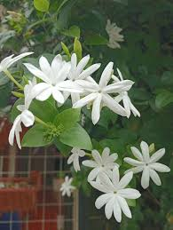

Bunga melati (Jasminum sambac) adalah tanaman hias perdu beraroma wangi khas yang melambangkan kesucian, ketulusan, dan keanggunan dalam kesederhanaan. Populer sebagai bunga putih kecil, melati sering digunakan dalam upacara adat, bahan teh, parfum, serta dipercaya memiliki manfaat kesehatan seperti antioksidan, relaksasi, dan perawatan kulit.